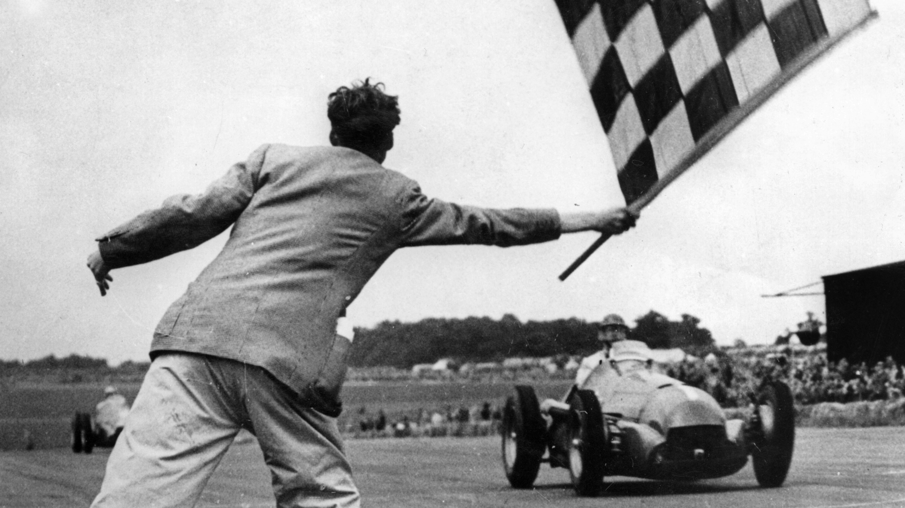
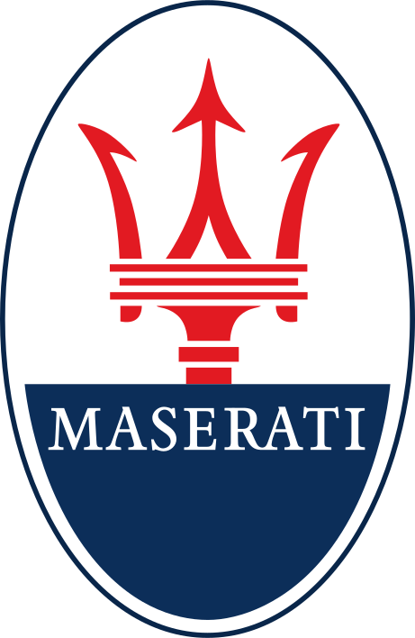
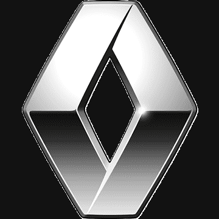
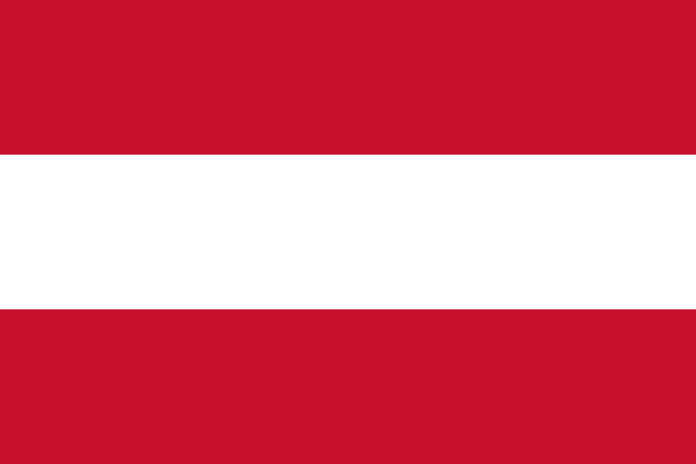
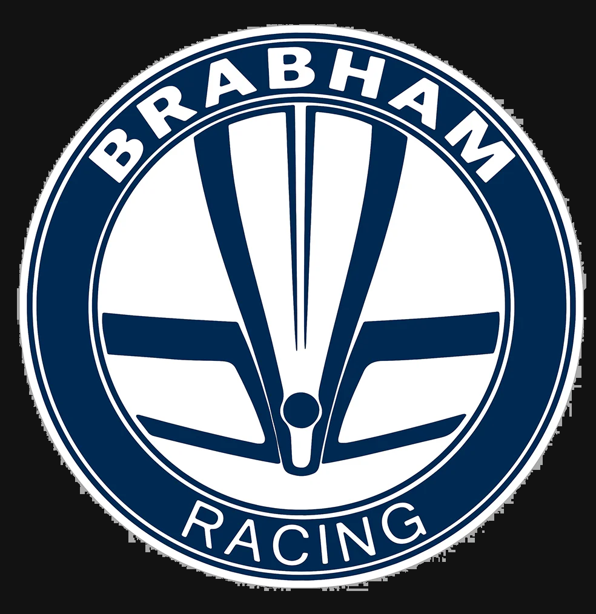
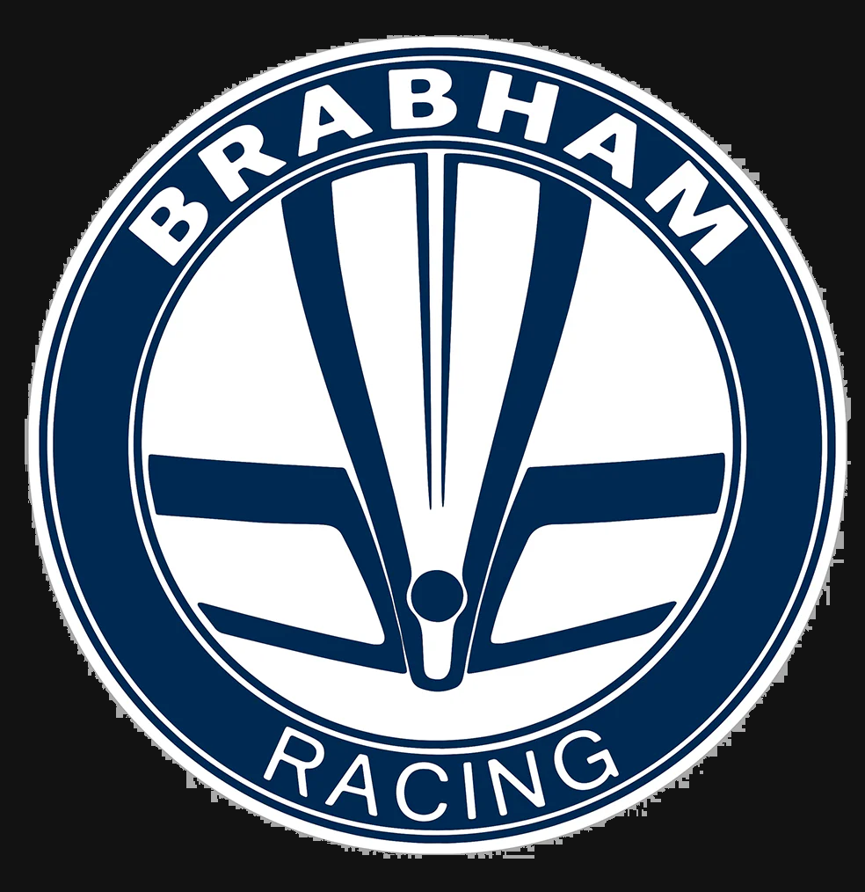

Bienvenidos al salón de la fama de la FORMULA 1
Nacida en 1950 como la cúspide del automovilismo mundial, la Fórmula 1 se ha convertido en mucho más que una competencia, es una epopeya de velocidad, innovación y audacia humana. Desde los días en que los pioneros desafiaban la muerte en circuitos primitivos, hasta la era actual de ingeniería de vanguardia y precisión quirúrgica, la F1 ha sido testigo de una evolución sin igual. Ha sobrevivido a tragedias, guerras tecnológicas entre constructores y rivalidades eternas entre genios del volante. Cada generación de pilotos ha dejado su marca sobre el asfalto. Este espacio ha sido dedicado a celebrar la grandeza, la pasión y el legado de los pilotos que marcaron para siempre la historia del automovilismo. Aquí rendimos homenaje a los campeones que desafiaron los límites de la velocidad, la precisión y el coraje. Desde leyendas inmortales hasta figuras contemporáneas, este salón honra a quienes transformaron el deporte con su talento extraordinario y espíritu competitivo. Acompañanos en este recorrido por la élite del automovilismo mundial, donde cada nombre es sinónimo de excelencia en la pista. Bienvenidos al Salón de la Fama de la Fórmula 1, el templo donde la velocidad se convierte en leyenda.
- Nombre: Michael Schumacher
-
País: Alemania

- Escuderias: Jordan - Benetton - Ferrari - Mercedes
- Campeonatos: 7
- Triunfos: 91
- Podios: 155
- Poles: 68


Michael Schumacher nació el 3 de enero de 1969 en Hermülheim, Alemania Occidental. Debutó en la Fórmula 1 en el año 1991 para la escuderia Jordan. Es considerado como uno de los mas grandes pilotos de la historia, ya no solo en Formula 1, sino en el automovilismo en general, conocido por su habilidad técnica, su agresividad en pista y por haber llevado a Ferrari a una era dorada tras años sin conseguir títulos por parte de la escuderia italiana. Se retiró definitivamente en 2012. En 2013, sufrió un grave accidente de esquí que lo dejó con lesiones cerebrales, y desde entonces su estado de salud se mantiene en privado.
- Nombre: Lewis Hamilton
-
País: Reino Unido

- Escuderias: McClaren - Mercedes - Ferrari
- Campeonatos: 7
- Triunfos: 105
- Podios: 202
- Poles: 104

Lewis Hamilton es un piloto británico de Fórmula 1, nacido el 7 de enero de 1985 en Stevenage, Inglaterra. Debutó en el año 2007 y permanece activo en la categoria a dia de hoy. Posee numerosos récords, incluyendo el mayor número de poles, victorias y podios en la historia de la F1. Con su llegada a Mercedes a partir de 2014, junto con la era híbrida, se convirtió en la fuerza dominante de la categoría, logrando igualar la cifra de Schumacher de mas campeonatos ganados. Conocido por su estilo de conducción agresivo pero preciso, su habilidad para clasificar en primera posición y su consistencia en carrera, Hamilton es considerado para muchos el mejor piloto de Fórmula 1 de la historia.

- Nombre: Ayrton Senna
-
País: Brasil

- Escuderias: Toleman - Lotus - McClaren - Williams
- Campeonatos: 3
- Triunfos: 41
- Podios: 80
- Poles: 65

Ayrton Senna da Silva fue un piloto de automovilismo brasileño, considerado uno de los más grandes en la historia de la Fórmula 1. Nació el 21 de marzo de 1960 en São Paulo, Brasil, y desde joven mostró un talento excepcional para la velocidad. Compitió en la Fórmula 1 entre 1984 y 1994, donde fue especialmente admirado por su habilidad bajo la lluvia y su intensidad en la pista, además de protagonizar una histórica rivalidad con el piloto francés Alain Prost. Senna falleció trágicamente el 1 de mayo de 1994, durante el Gran Premio de San Marino, cuando la columna de dirección de su Williams FW16 se rompió. El resultado de esto, un despiste en plena curva y un posterior impacto a mas de 200 km/h contra el muro de contención, una pérdida muy sentida en el mundo del deporte.
- Nombre: Juan Manuel Fangio
-
País: Argentina

- Escuderias: Alfa Romeo - Mercedes - Maserati - Ferrari
- Campeonatos: 5
- Triunfos: 24
- Podios: 35
- Poles: 29

Juan Manuel Fangio fue un legendario piloto argentino de automovilismo, considerado como el primer grande en la historia de la Fórmula 1. Nació el 24 de junio de 1911 en Balcarce, Argentina. Fangio dominó las pistas en la década de 1950, ganando cinco campeonatos mundiales de Fórmula 1, con cuatro escuderías diferentes. Era reconocido por su elegancia al volante, su inteligencia estratégica en carrera y su habilidad para llevar los autos al límite con un estilo fluido y preciso. Falleció el 17 de julio de 1995, dejando un legado imborrable en el deporte motor.
- Nombre: Alain Prost
-
País: Francia

- Escuderias: McClaren - Renault - Ferrari - Williams
- Campeonatos: 4
- Triunfos: 51
- Podios: 106
- Poles: 33

Alain Prost es un destacado ex piloto francés de Fórmula 1, nacido el 24 de febrero de 1955 en Lorette, Francia. Uno de los pilotos mas talentosos y meticulosos en la historia de la F1, se hizo célebre por su estilo de conducción cerebral y calculador, lo que le valió el apodo de "El Profesor". Fue protagonista de una intensa y legendaria rivalidad con Ayrton Senna, que marcó una era en la Fórmula 1 tanto por su competitividad como por sus dramáticos enfrentamientos en pista. Su enfoque analítico, su precisión técnica y su capacidad para adaptarse a distintas escuderías lo convirtieron en una figura fundamental en el desarrollo moderno de la Fórmula 1.

- Nombre: Max Verstappen
-
País: Paises Bajos

- Escuderias: Toro Rosso - Red Bull
- Campeonatos: 4
- Triunfos: 64
- Podios: 114
- Poles: 41

Max Verstappen es un piloto neerlandés de Fórmula 1, nacido el 30 de septiembre de 1997 en Bélgica, pero compitiendo bajo la bandera de los Países Bajos, Verstappen debutó en la F1 en 2015 con solo 17 años, convirtiéndose en el piloto más joven en participar en una carrera oficial. Rápidamente se consolidó como una de las grandes promesas del automovilismo, logrando su primera victoria en 2016, siendo el más joven en ganar un Gran Premio. A partir de 2021, inició una era de dominio en la categoría, ganando múltiples campeonatos mundiales consecutivos con actuaciones consistentes, agresivas y técnicamente impecables. El campéon actual se ha convertido en el máximo referente de la nueva generación de la Fórmula 1.
- Nombre: Sebastian Vettel
-
País: Alemania
- Escuderias: BMW - Toro Rosso - Red Bull - Ferrari - Aston Martin
- Campeonatos: 4
- Triunfos: 53
- Podios: 122
- Poles: 57

Sebastian Vettel es un ex piloto alemán de Fórmula 1, nacido el 3 de julio de 1987 en Heppenheim, Alemania. Vettel se destacó desde joven en las categorías inferiores y debutó en la F1 en 2007. Alcanzó la cima del deporte con Red Bull Racing, equipo con el que ganó cuatro campeonatos mundiales consecutivos entre 2010 y 2013, convirtiéndose en uno de los campeones más jóvenes y exitosos de la historia. Su estilo de conducción agresivo pero preciso, combinado con una gran capacidad para adaptarse a las condiciones de carrera, lo consolidó como una figura dominante en su época.
- Nombre: Fernando Alonso
-
País: España

- Escuderias: Minardi - Renault - McClaren - Ferrari - Alpine - Aston Martin
- Campeonatos: 2
- Triunfos: 32
- Podios: 102
- Poles: 22

Fernando Alonso es un piloto español de Fórmula 1, nacido el 29 de julio de 1981 en Oviedo, Asturias. Alonso se destacó desde muy joven por su agresividad, inteligencia táctica y habilidad para exprimir al máximo el rendimiento de sus coches. Alcanzó la gloria al convertirse en el campeón mundial más joven en ese momento al ganar los títulos de 2005 y 2006 con Renault, poniendo fin al dominio de Michael Schumacher y marcando el inicio de una nueva era en la F1.
- Nombre: John Young Stewart
-
País: Escocia

- Escuderias: BRM - Matra - Tyrrell
- Campeonatos: 3
- Triunfos: 27
- Podios: 43
- Poles: 17
John Young Stewart, mas conocido como "Jackie" Stewart, es un ex piloto de automovilismo escocés considerado una de las leyendas de la Fórmula 1. Nacido el 11 de junio de 1939 en Milton, Escocia, Stewart se destacó en la década de 1960 y principios de los 70 por su habilidad al volante, su consistencia y su enfoque meticuloso hacia la seguridad, un tema que lo obsesionó tras ver morir a varios colegas en las pistas. Además de su éxito deportivo, Stewart es ampliamente reconocido por haber liderado una campaña pionera para mejorar las condiciones de seguridad en la Fórmula 1, lo que cambió radicalmente el deporte.
- Nombre: Andreas Nikolaus Lauda
- País: Austria 
- Escuderias: March - BRM - Ferrari - Brabham - McLaren
- Campeonatos: 3
- Triunfos: 25
- Podios: 54
- Poles: 24
 

Andreas Nikolaus Lauda, mas conocido como "Nikki" Lauda, fue un piloto de automovilismo austriaco ampliamente reconocido como uno de los más valientes y talentosos en la historia de la Fórmula 1. Nacido el 22 de febrero de 1949 en Viena, Austria, Lauda es recordado, ademas de sus campeonatos, por su extraordinario regreso tras un gravísimo accidente en el Gran Premio de Alemania de 1976, donde sufrió quemaduras severas y daño pulmonar. Contra todo pronóstico, volvió a competir apenas seis semanas después del accidente, demostrando una determinación y coraje excepcional. Niki Lauda falleció el 20 de mayo de 2019, dejando un legado de superación, inteligencia técnica y pasión por las carreras.